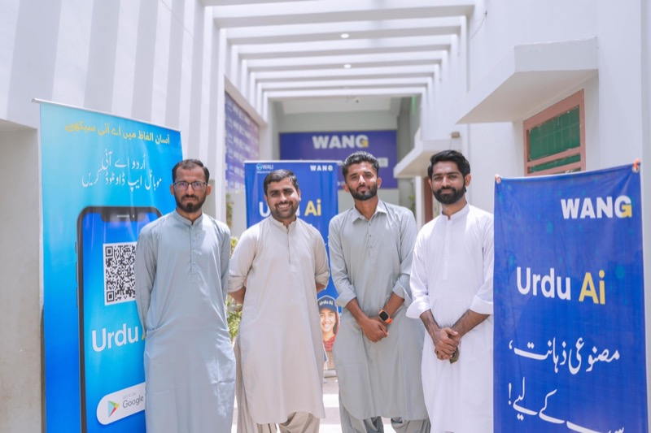

Award 2025

K-Electric Karachi Awards 2025
WANG recognized nationally for outstanding social services and community impact across Balochistan — selected from 166+ nominations. Covered by Daily Qaumi Awaz.
Media & Public Documentation
WANG’s strongest case comes from visible work, third-party coverage, and clear documentation. This page collects selected videos, public references, and the basic information media partners need in order to understand and cite the work accurately.
Selected Coverage
National TV segments, WALI field documentation, scholarships, climate resilience, and Urdu AI — curated from WANG's official YouTube channel. For the Internet Society documentary (third-party channel), see the embed below or watch on YouTube.

WANG recognized nationally for outstanding social services and community impact across Balochistan — selected from 166+ nominations. Covered by Daily Qaumi Awaz.
Television coverage of the Pakistan–Scottish scholarship program in Lasbela, archived on @wangorg. Open on YouTube.
Field documentation from the WANG Lab of Innovation in Balochistan. Open on YouTube.
Free AI literacy in Urdu — youth and women in Balochistan. Open on YouTube.
More on @wangorg
Empowering climate resilience with communities in Lasbela.
Urdu AI Impact Program
The same embedded spotlight coverage featured on impact.urduai.org — ARY, ABN, Express, and the Dost overview on the Urdu AI channel. These are separate from the @wangorg archive above.
Third-party sources
Full recognition stack: Awards & recognition.
Directories & research
Third-party pages and PDFs useful for due diligence, researchers, and funders. Wording here is neutral; each host controls its own content.
We do not mirror every news story about Balochistan on this page. For program-focused coverage, use the list under Third-party sources above.
Press Notes
WANG is the non-profit parent organization.
Use “WANG (We Are New Generation)” in public copy. The legal name belongs in small-print formal references only.
WALI is the rural innovation lab, not the parent organization.
WALI is the delivery site and lab model in Lasbela. WANG is the non-profit institution behind it.
Urdu AI is the clearest scaled impact story.
When coverage needs one concrete figure, use the 1M+ learner milestone and point audiences to Urdu AI.
Context matters: one village in Balochistan, national reach across Pakistan.
That contrast is central to the story and should not be flattened into generic innovation language.
Media Contact
For interviews, press notes, photo requests, or background conversations, contact WANG directly. The fastest route is email with your outlet, deadline, and angle.
Rural innovation, AI in Urdu, women’s participation, youth pathways, and digital access.
Impact, About, Initiatives, and the archive.
Go to Urdu AI and review the learning product directly.
Action
WANG’s strongest argument is visible execution. Media can document it, partners can strengthen it, and the public can see its scaled learning product through Urdu AI.